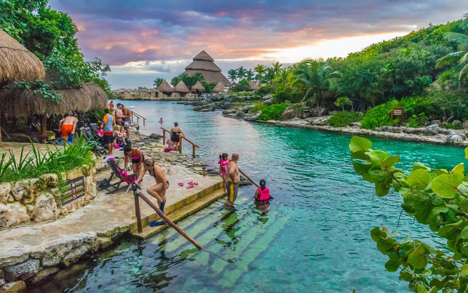
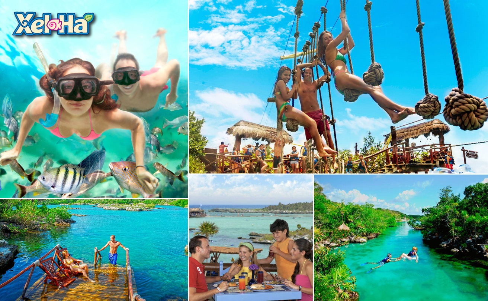
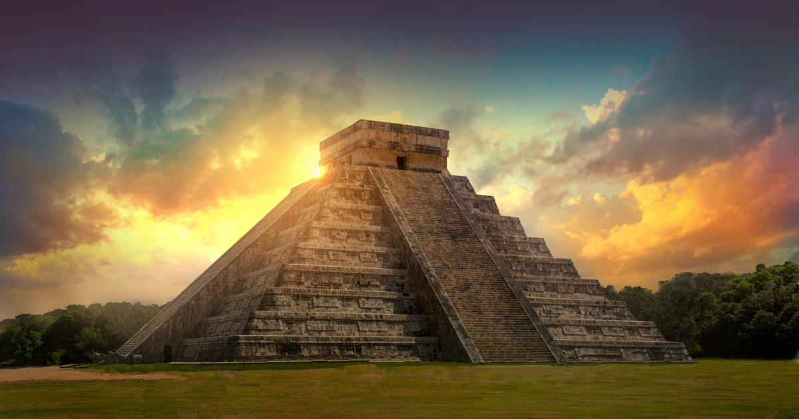
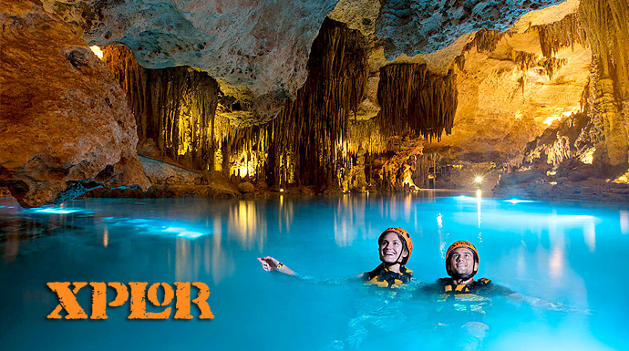

Santi's Palace |
Phone: (555)555-4455Adress: 2 Central Ave, Riviera Maya. |
|
 Xcaret Xcaret is the nature park in Playa del Carmen where you and your family will live Mexico in more than 50 natural and cultural attractions. Swim in underground rivers that come from the heart of the earth. Look closely at the inhabitants of the Aviary, the Coral Reef Aquarium, and the Butterfly Pavilion. - Ticket Price: $89.99 |
 Xel Ha Regarded as one of the world’s greatest Natural Wonders, Xel-Há provides one of the best experiences in the heart of the Riviera Maya. Practice snorkeling and see hundreds of colorful fish and a great diversity of marine species that inhabit its cove and cenotes. - Ticket Price: $80.99 |
|
 Chichen Itza Chichen Itza which means “at the mouth of the well of Itza “, is the 2nd most visited archeological site of Mexico today. The Kukulkan Pyramid in Chichen-Itza which known as “El Castillo” (the castle), is one of the new seven wonders of the world elected in 07.07.2007. It is exactly 24 m. high considering the upper platform. Apart from the Kukulkan Pyramid, in Chichen Itza there many other archaeological sites to visit, all carrying traces from Mayan Culture in many ways. - Ticket Price: $5.99 - Headphones (Different languages): $1.99 |
 Xplor At Xplor you’ll fly through the sky on zip-lines, drive amphibious vehicles in the Mayan jungle, paddle with your hands aboard rafts, walk in ancient caverns and caves deep inside the Earth, and swim in an underground river. At Xplor Fuego, the night comes to life so you can enjoy the same experiences as in the day, but ignited by the fire that will guide your way through all the adventures of the Park. - Ticket Price: $107.99 |